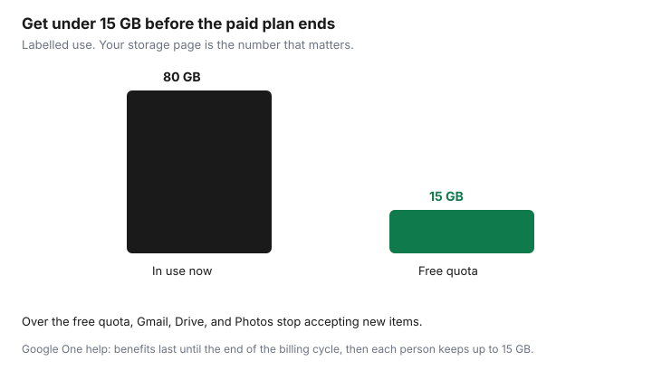

Subscriptions · Canada
How to Cancel or Downgrade Google One in Canada Without Losing Photos
Cancelling Google One does not delete your photos on the day you click the button. It does stop the extra storage at the end of the billing cycle. If you are using more than the free 15 GB, Gmail, Drive, and Photos then refuse new items. The work is to measure, delete or export, and only then cancel or step down. Do that while the paid plan is still active, not after the phone says uploads have failed.
Which cloud to keep is the Google One versus iCloud guide. The date goes on the renewal calendar.
Disclosure: A backup drive is an offer type if you need a copy that is not in Google. Saving Optimizer may earn a commission if we later add a partner link. We do not currently claim a drive or Google partnership. Education only.
Key takeaways
- Check Gmail, Drive, and Photos together. They share one quota. Free storage after you leave is up to 15 GB per person.
- Delete or export until you are under the plan you are moving to. Photos in the trash still count until they are gone.
- Cancel in Google One settings. If Apple or Google Play billed you, cancel there too. The paid space lasts until the end of the billing cycle.
- Over 15 GB, you cannot send or receive Gmail normally, upload to Drive, or back up new photos. Google says content may be removed after two years over quota, with notice.
- The family manager’s downgrade hits every member. Warn them and export first.
- If the plan is annual, set a reminder one month before renewal.
Check current storage use across Gmail, Drive, and Photos
Open Google One or the storage page at one.google.com while you are signed in as the account that pays. Read three numbers, not one: Gmail, Google Drive, and Google Photos. The plans page says every Google Account includes up to 15 GB, and that paid plans raise the total shared by those products. A Canada-priced view of that page on 25 Sep 2026 listed Basic at 100 GB for CA$2.79 a month, Google AI Plus at 2 TB for CA$13.99 a month, and Google AI Pro at 5 TB for CA$26.99 a month. Your account page is the price you pay. The public page is the menu.
Write the total used and the total allowed. If you use 80 GB and you intend to cancel to the free plan, you must remove about 65 GB before the cycle ends, not 80. The free plan keeps up to 15 GB. If you intend to downgrade from 2 TB to 100 GB, you must be under 100 GB. Downgrading to a plan you still exceed is the same trap as cancelling, on a higher floor.
| Move | You must be under | If you are over at the end of the cycle |
|---|---|---|
| Cancel to free | 15 GB | Gmail, Drive, and Photos stop taking new items |
| Downgrade to 100 GB | 100 GB | Same restrictions against the smaller quota |
| Stay, but clean up | Your current plan | You keep paying, and uploads continue |

Delete or export before downgrading below your usage
Delete in the product, then empty the trash. Google’s storage help says Photos items you delete go to the trash and are permanently deleted after 60 days, and that the cleanup tool’s deletions for Drive and Gmail can be permanent. Items sitting in trash still occupy quota. A delete you can still undo has not freed the plan. Empty Photos trash, Gmail trash, and Drive trash, and check the meter again a day later if the number barely moved.
Export what you cannot delete. Google Takeout, at takeout.google.com, can package Photos. Request it while the paid plan is active, download it, and open a sample. Copy the irreplaceable years to a drive as well. That drive is an offer type only if you need to buy one. A drive already on the shelf is the same step. Do not cancel to force yourself to download faster. Takeout on a large library can take days, and the billing cycle will not wait.
Large video, WhatsApp imports, and burst years are the usual gigabytes. The cleanup order on the iCloud guide is the same instinct if you are also full on the iPhone. Here, stay inside Google until the meter is under the target. Then change the plan.
Cancel in Google One subscriptions / Play billing as applicable
Google’s help page “Cancel your Google One membership” says you can cancel at any time, and you can also change, upgrade, or downgrade. On a computer: go to Google One, Settings, Cancel membership, and confirm. You should get a confirmation. In most countries, Google says storage purchases are non-refundable, and the storage you bought remains for the length of the subscription even if you cancel. Benefits do not vanish the hour you click. They last until the end of the billing cycle. That window is when the cleanup has to finish if you left it late.
The biller matters. If you subscribed in the Google One site or the Play Store on Android, cancel in that Google flow. If you subscribed through the App Store on an iPhone or iPad, Google says you cannot change the membership inside the Google One app on a later Android phone. Cancel in the App Store: your name, Subscriptions, Google One, Cancel. Apple’s trial timing, at least 24 hours before a renewal, is on the trial checklist. Google also describes a second step, deleting the Google One service from the Google Account at myaccount.google.com/deleteservices, when you are moving the payment to another company. Read the screen you have. If the membership page says the plan is billed by Apple, the Apple cancel is the one that stops the charge.
Someone else may be the buyer. If you are a member of a family group you do not manage, Google’s help says you can leave the group, ask the manager to cancel, or ask the manager to turn off sharing. Cancelling “your” Google One when you never paid will not find a button. Ask the manager. Keep the confirmation email with the end date in the cancelled archive.
What happens when you fall back to free 15GB
At the end of the billing cycle, Google says you and your family members lose the extra storage and the extra member benefits. Each person keeps their default storage of up to 15 GB at no charge. Existing files remain accessible. You can still sign in. If you are over that quota, Google’s cancel page and storage help describe the restrictions:
- Gmail: you cannot send or receive. Messages sent to you are returned to the sender.
- Drive: you cannot sync or upload. Sync from the computer’s Drive folder stops. You cannot create new Docs, Sheets, Slides, Drawings, Forms, or Vids. Until you reduce usage, nobody can edit or copy the affected files.
- Photos: you cannot back up new photos or videos.
That is a lock on new work, not an instant wipe. Google’s storage help also says that if you stay over quota for two years or longer, content in the account may be removed, including Gmail, Photos, and Drive, and that Google gives notice before content is eligible for deletion. Two years is not a planning horizon. It is a backstop you should not use. Get under 15 GB during the paid cycle, or buy a smaller plan that you fit inside. The cap can include a 100 GB plan. It should not include a 2 TB plan you only needed because the trash was full.
Family manager responsibilities when members over-share
The Google One view cited here lets the buyer share storage with up to five other people. Their Gmail, Drive, and Photos count toward the pool. When the manager downgrades or cancels, Google says family members lose the additional storage too. Each of them falls back to up to 15 GB. A manager who cancels on a Tuesday can lock a partner’s mail on the cycle date without that partner having opened the settings page.
Before you change the plan, open storage by member. If one person is the reason the pool is full, the fix may be their camera roll, not a more expensive tier and not a surprise cancel. Tell each member the date, the new limit, and the Takeout step. If a member will not delete, they need their own plan or they need to leave the family sharing before you shrink the pool. Turning off “share Google One with your family” is one of the paths Google describes when you are the manager. Do it only after they have exported. A shared album is not a backup of their original files.
iCloud Family Sharing has the same social problem on a different bill. One organizer, one pool, several people who think the space is theirs. If you are leaving Google because you chose iCloud, finish the Google export first, on the pick-one guide.
Set a calendar reminder one month before annual renewal
Monthly plans are easier to leave: cancel after the cleanup, and the cycle is weeks, not a year. Annual plans charge the year up front. Google’s help says the storage remains for the subscription you already bought, and that purchases are non-refundable in most countries. Cancelling the day after an annual charge does not return that year. It stops the next one, if you cancelled renewal, and you keep the storage until the end of the term you paid. Read your confirmation so you know which of those you did.
Put a reminder 30 days before the annual date, which is the same decide-alarm as the calendar guide. Use that month to delete burst years and look at the 100 GB tier before the charge. A 7-day alarm is the backstop to confirm the cancel went through. The prepay test belongs before you choose annual again: months to break even is the annual price on your toggle divided by the monthly price, and you only prepay if you used the storage every month for the last six. This draft does not print Google’s annual dollar total, because the Canada-priced capture showed the monthly prices and a “save up to 16 percent” toggle, not the yearly figures. Read them on the account.
After the cycle ends, check the card. A charge from Apple, from Google Play, and from a carrier are three different receipts. One cancel stops one of them. If a second charge appears, you found the other biller. The statement hunt is how you match the descriptor.
Sources & date stamps
- Google One help, “Cancel your Google One membership,” read 25 Sep 2026: cancel in Google One settings; benefits last until the end of the billing cycle; each person keeps up to 15 GB; over-quota limits for Gmail, Drive, and Photos; App Store purchases are cancelled at Apple; non-refundable in most countries.
- Google One help, “How your Google storage works,” and the purchase and cancellation policy: two years over quota can make content eligible for deletion after notice; Photos trash 60 days on the cleanup description; free quota is up to 15 GB shared by Gmail, Drive, and Photos.
- Google One plans page, Canada-priced view captured 25 Sep 2026: 100 GB CA$2.79 a month, 2 TB CA$13.99, 5 TB CA$26.99, share with up to five others. Confirm currency. Annual totals were not in that capture.
- The 80 GB illustration on the chart is labelled, not a reading from a Google account.
Frequently asked questions
Will Google delete my photos the day I cancel?
No. Google says storage and benefits last until the end of the billing cycle. After that, if you are over 15 GB, you cannot back up new photos, and mail and Drive stop accepting new items. Content may be removed only after you have been over quota for two years, with notice.
I subscribed on an iPhone. Where do I cancel?
Cancel in the App Store: your name, Subscriptions, Google One. Google says an App Store plan is not managed inside Google One the way a Play plan is. Keep the confirmation.
Does emptying the Photos trash matter?
Yes. Deleted Photos sit in the trash for up to 60 days and still count. Empty the trash, then recheck the meter before you trust the new total.
What if my family shares my plan?
They lose the extra storage when you cancel or stop sharing, and each person keeps up to 15 GB. Tell them the date and let them export before you shrink the pool.
When should I look at an annual plan again?
One month before it renews. Delete burst years first, read the yearly total on your account, and prepay only if you will still need that tier. A reminder on the charge date is already late.